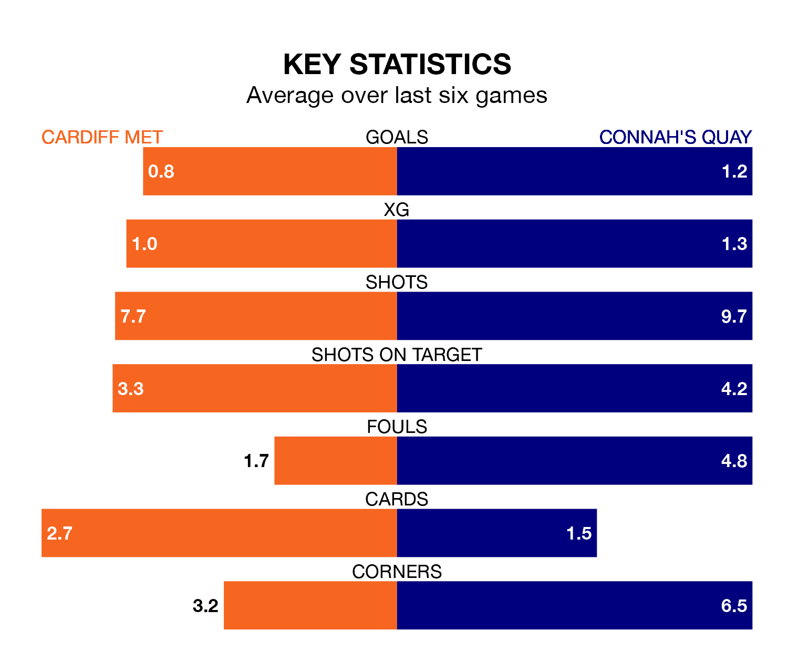

Struggling Cardiff Met face Connah's Quay at the Cardiff International Sports Stadium on Saturday looking to build on a win in their last league outing.
After securing all three points with a 2-1 victory over Caernarfon Town on March 23, the Archers sit bottom of the Welsh Premier League.
They travel to play a Connah's Quay side second in the standings, who were held in their last match, 0-0 against Newtown, on March 29.
With 67 goals in 29 games so far this season, Connah's Quay are the league's second-highest scorers with 2.3 goals per game. And they are conceding fewer than average, letting in 41 goals at a rate of 1.4 per game.
Cardiff, meanwhile, are below average scorers, with 1.2 goals per game, compared to a league average of 1.5. They have conceded 1.8 goals per game.
In the last 10 years, Cardiff and Connah's Quay have played each other on 27 occasions. Cardiff won three of them, Connah's Quay 16, and they drew eight times.
On average, the Archers scored 0.6 goals and the Nomads 1.6 in those matches.
Their last meeting was on February 24, when Connah's Quay won 2-1 at home.
The Archers are in bad form in the Welsh Premier League, with one win and a draw from their last six games.
With two wins and a draw over that period, the Nomads's form is better – they have taken seven points from 18, compared to the hosts' four.
Updated: 10:31 (UTC), 31/03/24